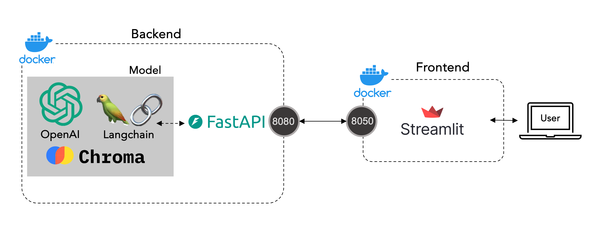
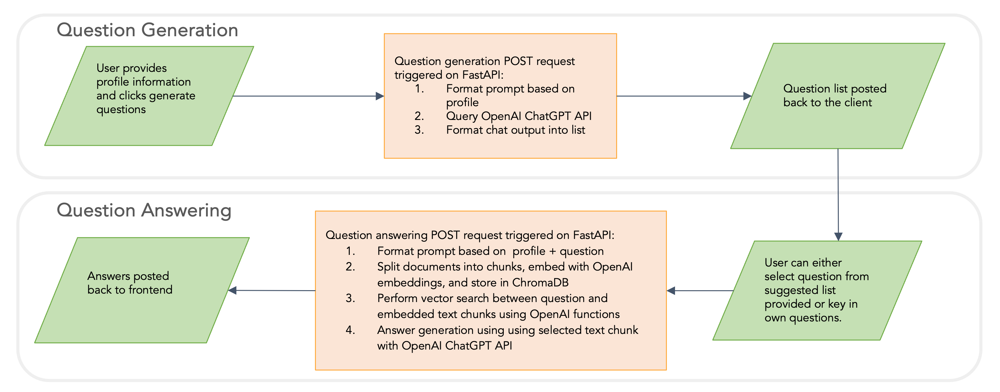
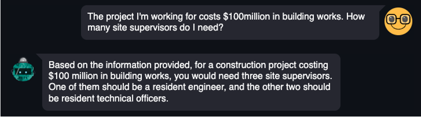
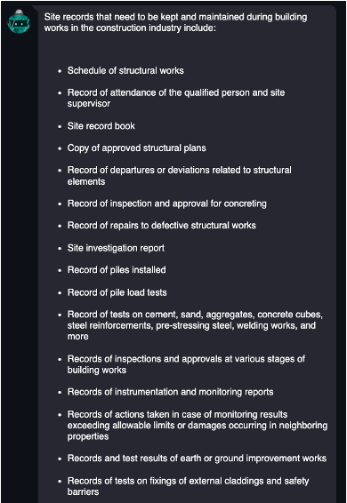

Project Description
Everyone needs to understand the law to know their rights and responsibilities as a worker or an employer, but legislation can be incredibly difficult to navigate. Besides legislation, there can be supporting codes of practice and guidelines that are also legally binding. This makes it daunting and time-consuming for people to understand what they really have to do.
This was the motivation behind Lawbot -- a mini-project my AI Apprenticeship Program teammates and I worked on. It is a conversational AI application designed to assist users with legal inquiries, providing information, guidance, and answers to common legal questions.
Tech Stack

The chatbot's frontend is powered by Streamlit within a dockerized container. The backend is powered by FastAPI calling on Langchain-OpenAI to process the user's profile and input questions. A network bridge is set up between the two docker containers.
Workflow

Our chatbot has two main components: Personalized Retrieval and Question Answering. When the user keys in important demographic information such as their age, employment status, occupation and industry, our model would generate a list of questions to help people who need some guidance to a starting point.
The user can either select a question from the list generated, or key in their own question. The question is then passed to the Question Answering model, which would generate an answer based on the user's input.
Applications
The model uses RAG to parse through uploaded documents within the database to locate chunks of the document that are most relevant to the user's question before packaging the information into a coherent answer that the user will see. After verifying our model's ability to process labour queries pertaining to manpower legislation and employment norms from legal guides, I experimented with more complex and specific legislation.
In my days as a civil engineer, we often had to navigate the complex Building Control Act, Building Control Regulations and various codes of practice from the different authorities. I had always dreamed of a more custom and efficient way of searching the documents in my line of work and when I was struggling to study for the Professional Engineer's Examination (PPE) which I eventually passed, thank goodness.
In the images below, you can see that specific regulations regarding site practices and manpower requirements on site were fed to the chatbot, and the answers returned were rather accurate.

